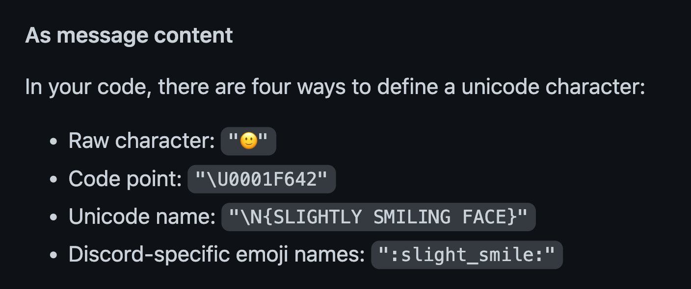
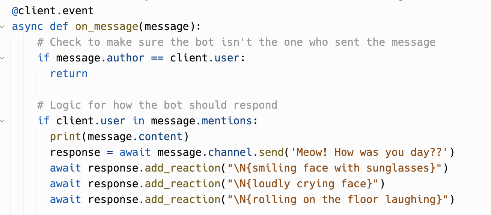
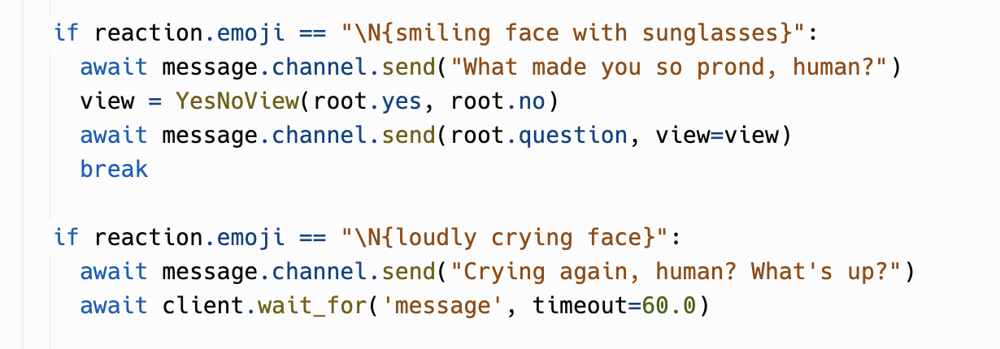
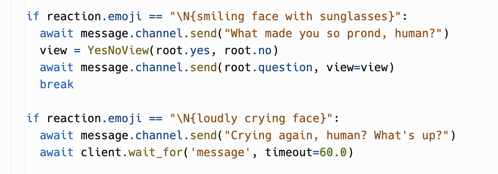

This Discord bot is going to be an annoying and funny cat that asks yes or no questions and acts differently depending on the response. I think it will be a fun way to make decisions and pass the time.
To use the bot, users will trigger it by typing a specific command in the Discord chat. The bot will then ask a series of yes or no questions related to the topic at hand. To make it more engaging, I'm going to add in emoji reactions and binary tree buttons, so users can respond with just a click.
I want the BadCat Bot to have a playful and mischievous personality. It will use humor and sarcasm to interact with users and create a lighthearted atmosphere.
At the beginning, I want to figure out how to add emoji response as the bots in other servers do. Google told me that I can use response.add_reaction() function. For the emoji, I tried both unicode and unicode name, and chose latter. So I have 3 emoji reaction await players to respond.
 Then, I looked at the example of animal game bot, trying to incorporate the buttons and binary tree for yes or no questions. I modified the trees, asking annoying questions as a bad cat. The questions are related to kittys daily life.
 

The binary tree questions only happens when player respond with the first emoji. When player react with the second emoji, there will be a chance talk to the bot, and the bot will respond with a line in the movie from semantic similarity bot example.
At this point I encountered a problem. I found the semantic response was always same, which is less fun. I checked the code, and tried to adjust the line the bot will be picking.


After adjusting the number, I sucessfully get the line which was player's response. Till this moment I roughly got the desirable outcome. After some polishing, the BadCat Bot came to life!